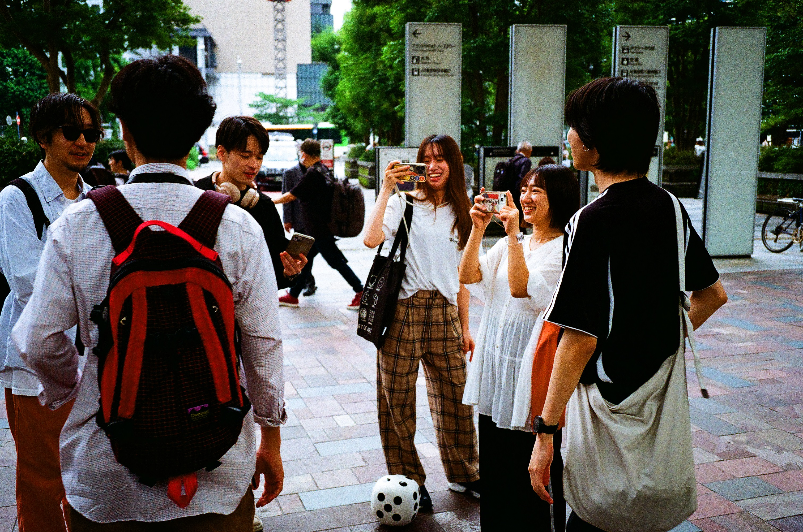
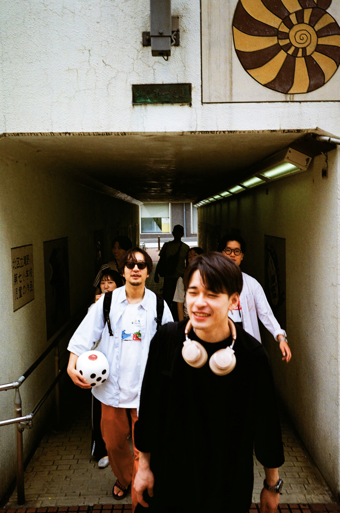
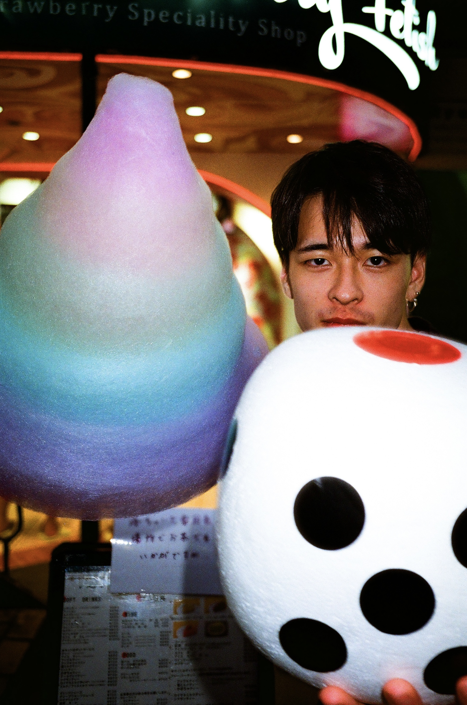

第二回
2026.06.27
10:00 — 20:00
START : 東京駅
SCROLL
Memory
あの日、僕たちは
サイコロを振って
東京を回った。
あれから、一年が経った。
また、あの興奮を。
そして、今年こそ
ゴールへ。



— 第1回総武線双六 より
Rules
旅の始まりは、東京駅
東京駅を出発し、山手線を一周して戻ることを目標とする
サイコロが道を決める
出た目の数だけ次の駅へ進む。選択の余地はない。
滞在時間もサイコロが決める
到着した駅では「サイコロの目 × 15分」滞在。何をするかは自由自在。
奇数か、偶数か選べ
振る前に「奇数」か「偶数」を宣言できる。的中すれば ＋2駅 進む。
ボーナス一人一回の特権
サイコロの振り直し、または滞在時間の延長——どちらか一方を、一度だけ行使できる。
特殊アクションCourse
山手線全30駅を舞台に
運命のサイコロが行き先を決める
Schedule
10:00
集合・出発
東京駅にて集合。ルール確認後、最初のサイコロを振る。
10:00 — 20:00
双六本番
山手線を巡りながら、各駅で滞在・探索・飲食を楽しむ。
20:00
タイムアップ
制限時間終了。到達した駅でゲームを締める。
20:00 〜
打ち上げ
どこかの駅周辺で打ち上げ。今日の冒険を肴に一杯。